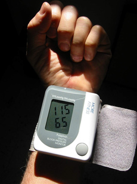

Clinicial Experience
Nutrition 358 - Personal Assessment Project
Fall 2016
In class Nutrition 358, Nutritional Assessment, I assessed my own nutritional status using clinical, anthropometric, and dietary assessments. I am currently working on the final section of the project where I am taking a summary of the data collected through the assessments and analyzing it through a dietician's perspective.
